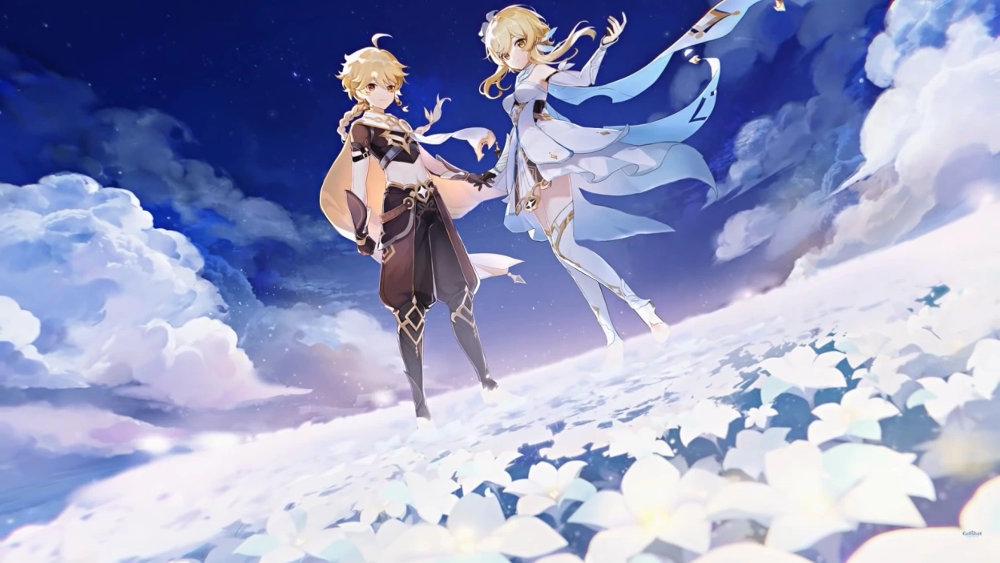

Добро пожаловать в гайд по Genshin Impact
Ето гайд для новичков в Genshin Impact.
Здесь ви узнаете что делать в етом откритом мире
Ето гайд для новичков в Genshin Impact.
Здесь ви узнаете что делать в етом откритом мире
1)Исследование мира:
Основной аспект игры - это разведка огромного открытого мира Тевиата. Исследуйте каждый уголок карты, обнаруживайте сокровища, секретные места и тайники. Это поможет вам найти ценные ресурсы, квесты и врагов для сражений.
2)Выполнение квестов:
Следуйте за сюжетом и выполняйте квесты, которые доступны у вашего приключенческого ранга. Они предлагают ценные награды, а также развивают историю мира Genshin Impact.
3)Борьба с боссами:
Встречайтесь с мощными боссами, распределенными по миру игры. Победа над ними может принести вам редкие материалы для прокачки персонажей и артефактов.
4)Прокачка персонажей:
Улучшайте своих персонажей, повышая их уровень, умения и экипировку. Это позволит вам справляться с более сложными вызовами в игре.
1)Тратить премиум-валюту на случайные предметы:
Сохраняйте свою премиум-валюту (гемы) на призывы в баннерах персонажей или оружия, чтобы повысить свои шансы на получение нужных вам предметов.
2)Пропускать ежедневные задания:
Ежедневные задания предоставляют вам дополнительные награды и опыт, поэтому не пренебрегайте ими.
3)Игнорировать ивенты:
Участвуйте в ивентах, когда они доступны, так как они предлагают уникальные возможности для получения эксклюзивных наград.

для чего нужна интерактивная карта:
Пользуйтесь интерактивными картами! Доступными на официальных ресурсах или созданными сообществом. Они помогут вам найти сокровища, ресурсы, боссов и другие интересные места в мире игры.

Начало исследования:
После завершения вводной части игры и освобождения от подземного подземелья, вам предстоит прибыть в Мондштадт, один из двух главных городов в мире Teyvat. В этот момент начинается ваше исследование этого региона.
Главные квесты:
Вам будут предложены основные квесты, которые направят вас по сюжетной линии Мондштадта. Эти квесты, как правило, включают в себя исторические аспекты, а также взаимодействие с ключевыми персонажами этого региона.
Изучение района:
Во время выполнения главных квестов исследуйте различные районы Мондштадта. Общайтесь с местными жителями, осматривайте окружение и выполняйте второстепенные задания, чтобы раскрыть дополнительные аспекты сюжета и мира игры.
Участие в событиях:
В процессе прохождения сюжетной линии Мондштадта могут появляться различные события, связанные с этим регионом. Участвуйте в них, чтобы получить дополнительные награды и углубить своё понимание мира игры.
Продвижение по сюжету:
Следуйте инструкциям в журнале квестов и взаимодействуйте с отмеченными на карте местами, чтобы продвигаться в сюжете Мондштадта. Не забывайте выполнять квесты и общаться с персонажами, чтобы получить больше информации и продвинуть сюжет.